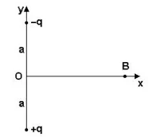
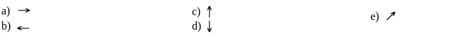

01.
(UFPE) Duas partículas de mesma massa têm cargas Q e 3Q. Sabendo-se que a força gravitacional é desprezível em comparação com a força elétrica, indique qual das figuras melhor representa as acelerações vetoriais das partículas.
02.
(UNIFOR CE) Duas pequenas esferas condutoras idênticas P e Q, estão eletrizadas com cargas de –2,0 μC e 8,0 μC, respectivamente. Elas são colocadas em contato e, em seguida, separadas de uma distância de 30 cm, no vácuo. A força de interação elétrica entre elas, e a intensidade dessa força, serão, respectivamente, de:
03.
(UFJF-MG) Duas esferas A e B, eletricamente carregadas com cargas QA = -2QB e situadas a uma distância d entre si, atraem-se mutuamente. O módulo da força eletrostática que A exerce em B é denotado FB, e o módulo da força eletrostática que B exerce em A é denotado FA. Concluímos que:
a) FA = 4 FB.
b) FA = 2 FB.
c) FA = FB.
d) FA = (1/2)FB.
e) FA = (1/4)FB.
GABARITO: c)
04.
(UERJ) Duas pequenas esferas metálicas iguais, A e B, se encontram separadas por uma distância d. A esfera A tem carga + 2q e a esfera B tem carga –4q. As duas esferas são colocadas em contato, sendo separadas, a seguir, até a mesma distância d. A relação entre módulos das forças F1 e F2 de interação entre as esferas, respectivamente, antes e depois do contato é:
05.
De acordo com a Lei de Coulomb, assinale a alternativa correta:
a) A força de interação entre duas cargas é proporcional à massa que elas possuem;
b) A força elétrica entre duas cargas independe da distância entre elas;
c) A força de interação entre duas cargas elétricas é diretamente proporcional ao produto entre as cargas;
d) A força eletrostática é diretamente proporcional à distância entre as cargas;
e) A constante eletrostática K é a mesma para qualquer meio material.
GABARITO: c)
06.
(UEL) A figura abaixo mostra duas cargas elétricas +q e -q, separadas pela distância 2a e simétricas em relação ao eixo x. É correto afirmar:

Qual das alternativas seguintes representa mais corretamente a direção e o sentido da força que atuaria sobre uma terceira carga +q colocada em B:

07.
(UFJF) Duas esferas igualmente carregadas, no vácuo, repelem-se mutuamente quando separadas a uma certa distância. Triplicando a distância entre as esferas, a força de repulsão entre elas torna-se:
08.
(FUVEST) Duas partículas eletricamente carregadas com +8,0 . 10-6 C cada uma são colocadas no vácuo a uma distância de 30 cm, onde K0 = 9 . 109 N.m2/C2. A força de interação entre essas cargas é: